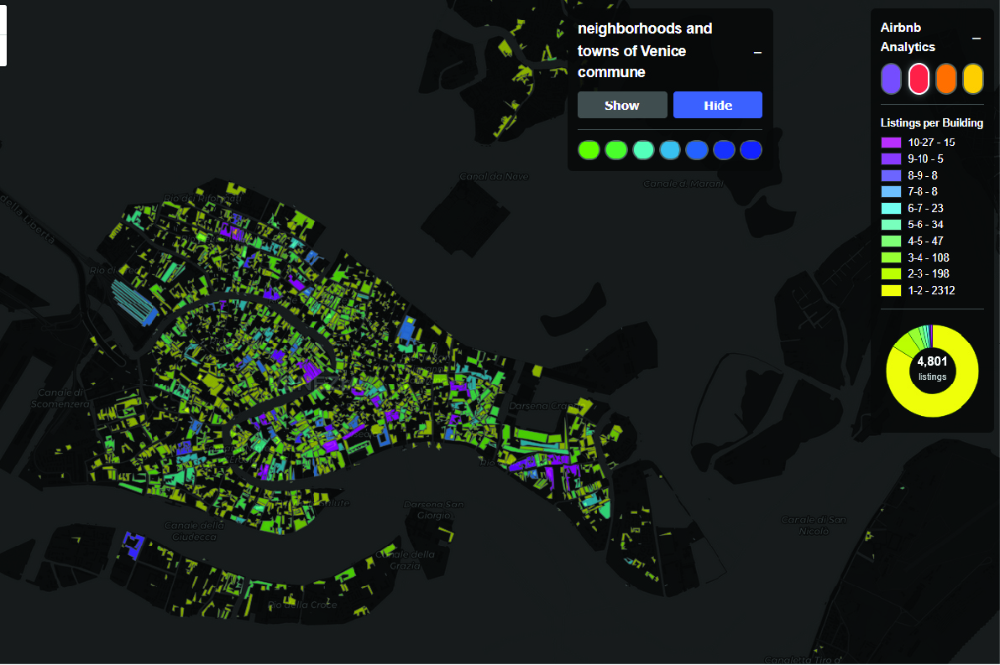

Urban Scale of Venice Through the Prism of the Airbnb Effect is a spatial research project examining the impact of short-term rentals on the historic fabric and residential life of Venice.
Over the past decade, Airbnb rapidly spread throughout the city center, transforming former residential homes into short-stay accommodations and displacing long-term residents. As entire buildings shifted toward tourist use, Venice began to hollow out as a living city.
In response, Italy introduced the CIN registration system to track short-term rentals, enforced new safety requirements, and obliged platforms to remove unregistered listings. Venice implemented additional local measures, including experimental limits of 120 rental days per year, mandatory SCIA filings, in-person guest check-ins, and stricter waste management and identification rules. Despite these efforts, inspections revealed that a substantial share of listings still operated without valid CIN codes. Parallel measures—such as the introduction of a day-trip access fee and temporary restrictions on remote check-ins—reflect a broader attempt to rebalance tourism pressure.
This interactive map presents aggregated Airbnb listing data at building and neighborhood scales for 2022–2023, prior to the implementation of the strict regulatory framework. The visualization reveals the total number of listings per building and area, accumulated nightly prices, guest capacity per night, and estimated annual accommodation capacity—offering a data-driven perspective on the scale of short-term rental pressure across Venice.

Click the image above to open the application in full screen.